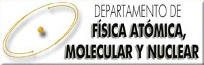
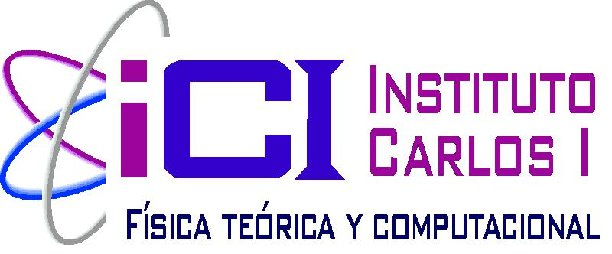

IV Jornadas de Jóvenes Investigadores en Física Atómica y Molecular
Granada, 1
st
-3
rd
February 2012
Home
Scientific program
Registration and abstract
Participants
Conference venue
Organizers
Contact
Accommodation
Sponsors
GEFAM
Sponsors
The J2IFAM is supported by:
Grupo Especializado de Física Atómica y Molecular
de la
RSEF
y la
RSEQ
Universidad de Granada
Faculta de Ciencias de la UGR

Departamento de Física Atómica Molecular y Nuclear

Instituto Carlos I de Física Teórica y Computacional
Programa Oficial de Doctorado en Física y Matemáticas (FISYMAT)
Programa Oficial de Doctorado en Física y Ciencias del Espacio